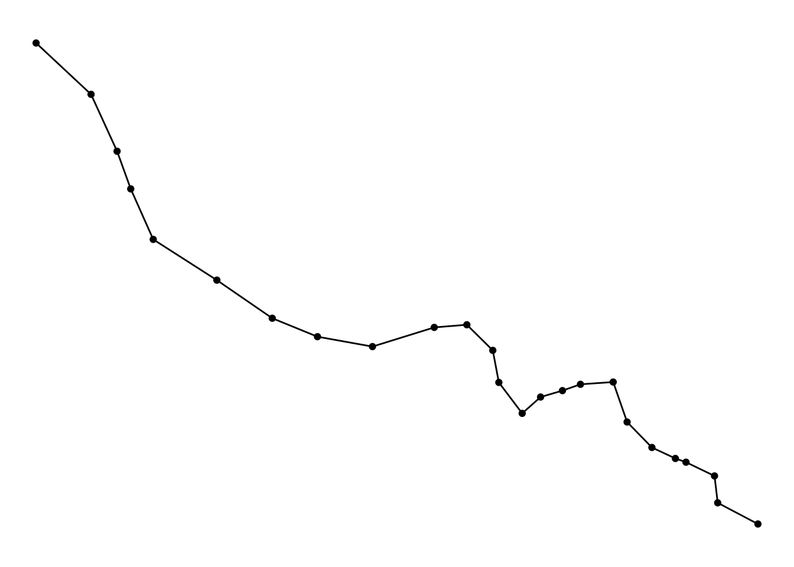

A few days ago I posted this tutorial about hot routes for visualising crime along a network (eg tube line). But I mentioned at the end, it may not always be necessary to include the geographic component of this visualisation. Instead, another approach could be to make use of street profile analysis.
Street profile analysis was initially developed as a method for visualising temporal and spatial crime patterns along major roadways in metropolitan areas. The idea is that the geographical location of the street may not actually be as important as the ability to visualise data from multiple years in a comparable way. So the approach is to treat the street in question as the x-axis of a graph, with a start point (A) and end point (B) breaking it into some interval (I think they use 100m intervals). Then, you can visualise how crime is distributed along this street by plotting count or rate of crimes on the y-axis, and have multiple lines for different years for example. You can add context by re-introducing some key intersections for example
In their paper, Spicer and colleagues demonstrate this using the example of Kingsway Avenue in Vancouver, BC

When I was working as a crime analyst at TfL, I adapted this method to use this to visualise crime along a bus route, but instead of breaking up the route into 100m intervals from start to finish, I used bus stops to represent ticks along the axis. Also instead of using crime from different years, I compared data from different sources. It was very easy to adapt street profile analysis in this way, and it proved a simple yet powerful way to tell the story of how crime was distributed along the specific bus line. So in what follows I will describe how to carry out Street Profile Analysis using R. I’m going to pick on the Bakerloo line once again, and use some data from the British Transport police once again.
Overview
Like last week, let’s start with a breakdown of the steps we will need to follow.
Step 1: Prepare the network layer Step 2. Link crime events to points of interest Step 3: Calculate a rate Step 4: Visualise the results
Exactly like last week for the hot routes tutorial, I will use the example dataset of the London Underground network, spatial data for which can be downloaded using the Transport for London API, and crime from British Transport Police for February 2020 available via data.police.uk.
Step 1: Prepare the network layer
This step is the same as last week’s tutorial so I won’t dwell on it too much, essentially we get the stops for the bakerloo line from the TfL API, make it an sf object, and create a connected line. I’ve created a function called getBakerlooLine() which I just run here. If you want to see the function it is on github here but better to have a look at step 1 of the hot routes tutorial for a breakdown and explanation.
library(rjson)
library(dplyr)
library(sf)
bakerloo_stops <- getBakerlooStops()## Warning in readLines("https://api.tfl.gov.uk/line/bakerloo/route/sequence/
## outbound"): incomplete final line found on 'https://api.tfl.gov.uk/line/
## bakerloo/route/sequence/outbound'bakerloo_line <- getBakerlooLine(bakerloo_stops)We can plot these to make sure everything looks okay:
library(ggplot2)
ggplot()+
geom_sf(data = bakerloo_stops) +
geom_sf(data = bakerloo_line) +
theme_void() +
theme(panel.grid.major = element_line(colour = "white"))
Yepp, looking good! In this case we don’t really need to split our line into segments, so that’s it for prepping our network layer!
Step 2. Link crime events to points of interest
For step 2, we start once again with importing some data from the British Transport Police.
crimes <- read.csv("data/2020-02-btp-street.csv")
crimes_sf <- st_as_sf(crimes, coords = c("Longitude", "Latitude"), crs = 4326)We also want to subset this larger dataset of crimes to only those that are on or near the Bakerloo line
bakerloo_line_buff <- st_buffer(bakerloo_line, 0.005)## Warning in st_buffer.sfc(bakerloo_line, 0.005): st_buffer does not correctly
## buffer longitude/latitude datacrimes_sf <- st_intersection(bakerloo_line_buff, crimes_sf)And make sure it’s all looking good
ggplot()+
geom_sf(data = bakerloo_line_buff) +
geom_sf(data = bakerloo_line) +
geom_sf(data = bakerloo_stops) +
geom_sf(data = crimes_sf, col = "blue") +
theme_void() +
theme(panel.grid.major = element_line(colour = "white"))Now we can snap each crime point to the closest tube station using the st_nearest_feature() function. This will return, for each point, the ID of the nearest segment.
closest_stop <- st_nearest_feature(crimes_sf, bakerloo_stops)
closest_stop## [1] 16 21 21 25 25 25 25 25 25 13 13 24 24 24 24 24 20 20 20 20 15 14 14 14 14
## [26] 23 23 23 23 23 23 23 23 23 23 23 23 23 23 23 23 23 23 23 23 23 23 23 23 23
## [51] 23 23 23 23 23 23 23 23 23 23 23 23 23 23 23 23 23 23 23 23 23 23 23 23 23
## [76] 23 23 23 23 23 23 23 23 23 23 23 23 23 23 23 23 23 23 23 23 23 23 23 23 12
## [101] 12 12 12 12 12 12 12 12 12 12 12 12 12 6 17 17 17 17 17 17 17 17 17 17 17
## [126] 17 17 17 17 17 1 1 1 1 1 1 1 1 1 1 1 1 1 1 1 1 1 3 3 3
## [151] 3 3 9 9 9 9 9 9 9 7 7 7 7 7 7 7 7 7 7 7 7 7 7 7 7
## [176] 7 7 7 7 7 7 7 7 7 7 7 7 7 7 7 7 7 7 7 7 7 7 7 7 7
## [201] 7 7 7 7 7 7 7 7 7 7 7 7 7 7 7 7 7 7 7 19 19 19 19 19 19
## [226] 19 19 19 19 19 19 19 19 19 19 19 19 19 19 19 19 19 19 19 19 19 19 19 19 19
## [251] 19 19 19 19 19 19 19 19 19 19 19 19 19 19 19 19 19 19 19 19 19 19 19 19 19
## [276] 19 19 19 19 19 19 11 11 11 11 11 11 11 11 11 11 11 11 11 11 11 11 11 11 11
## [301] 11 11 11 11 11 11 11 11 11 11 11 11 8 8 11 8 11 11 11 8 8 8 11 11 11
## [326] 11 8 8 8 8 8 8 8 8 8 8 8 8 8 8 8 8 11 8 11 11 2 2 2 2
## [351] 2 2 2 2 2 2In the results above, we see printed the stop ID for the closest stop to each crime incident.
Now we need to count the frequency of each stop ID (as this tells us the number of crimes that are close to it, therefore assigned to it), and join this with out stops dataframe:
library(tidyr)
#make list of nearest into df of frequency
stops_w_crimes <- as.data.frame(table(closest_stop))
#join to sections object and replace NAs with 0s
bakerloo_stops <- left_join(bakerloo_stops %>% mutate(stopnum = rownames(.)),
stops_w_crimes,
by = c( "stopnum" = "closest_stop")) %>%
mutate(Freq = replace_na(Freq, 0)) ## Warning: Column `stopnum`/`closest_stop` joining character vector and factor,
## coercing into character vectorGreat now we have a dataframe of each stop and the number of crimes that happened closest possibly to it. We could make a street profile of it with this count (in fact we will in a moment) but first let’s discuss about rates!
Step 3: Calculate a rate
In order to calculate a crime rate for each station, we need to think about what is an acceptable denominator. How can we best estimate the number of opportunities present for the particular crime type we are interested in, and how might that be captured in some available data set?
In an upcoming paper “Alternative denominators in transport crime rates” the pre-print for which is available on OSF here we considered the various types of denominators that may be available to crime analysts focusing on estimating ambient populations to calculate crime risk. These can be:
- residential population in the area surrounding the station (available from the Census)
- workplace population in the area surrounding the station (also available from the Census)
- number of lines passing through each station (available from station information, or even a network map)
- number of trains passing through each station (available from station information, maybe a timetable)
- number of passengers entering/exiting each station (available from transit authority, maybe via a survey like the Rolling Origin Destination Survey, or smartcard data (eg Oyster card in London))
and possibly some other options that we have not thought of.
Here, for simplicity we can use the